Chapter 6 · 1/2第 6 章 · 预训练（1/2）
这一页覆盖原书第 6 章的 8 条编号公式（6.1–6.8），它们其实是两组东西：前四条（6.1–6.4）是"用什么任务训练"——自回归语言模型、前缀语言模型、填空（FIM）、去噪自编码，本质都是同一条链式法则分解，只是"哪些位置的 token 计入损失、条件里能看见什么"不同；后四条（6.5–6.8）是"要花多少算力"——参数量清点与浮点运算次数（FLOPs）估算。另外补上三节数学细节（原书只给了图、没有给公式）：学习率的 warmup + 余弦退火、Adam/AdamW 的更新规则与权重衰减的等价性、梯度裁剪与混合精度的 loss scaling。
原书位置第 6 章 6.1 节 Pre-training Tasks / 6.4 节 Parameter Calculation and Efficiency Analysis 对照原文
本页公式一览
| 编号 | 一句话 | 核心数学工具 |
|---|---|---|
| 6.1 | 自回归语言模型的训练损失（对数似然） | 全概率公式 + 链式法则 + 对数单调性 |
| 6.2 | 前缀语言模型：只对 suffix 计损失 | 链式法则在子序列上的限制 |
| 6.3 | 填空 LM（FIM）：prefix / suffix / middle 三段分解 | 重排后序列上的链式法则 |
| 6.4 | 去噪自编码（DAE）：从加噪文本恢复原文 | 条件概率的对数分解 |
| 6.5 | LLaMA 参数量清点 | 按模块求和（计数） |
| 6.6 | 多头注意力的训练 FLOPs | 矩阵乘 FLOPs 计数 + 反向 = 2× 前向 |
| 6.7 | 所有线性变换的 FLOPs = 6C×参数量 | 前向 2CΦ + 反向 4CΦ |
| 6.8 | 开启激活重计算后的 FLOPs = 8C×参数量 | 多加一次前向 |
| 补充 A | 线性 warmup + 余弦退火的学习率 | 线性插值 + 余弦函数 |
| 补充 B | Adam / AdamW 更新规则与权重衰减 | 指数加权平均 + 偏差修正 + 局部二阶近似 |
| 补充 C | 梯度裁剪与混合精度 loss scaling | 球面投影（KKT）+ 浮点动态范围分析 |
本页符号约定
| 符号 | 含义 | 形状 / 量纲 |
|---|---|---|
| \(\mathbf{u}=(u_1,\dots,u_T)\) | 一条 token 序列（样本） | 长度 \(T\)，\(u_t\) 是词表中的整数 id |
| \(u_{<t}\) | 前缀 \((u_1,\dots,u_{t-1})\)；\(u_{>t}\) 同理 | 序列 |
| \(P_\theta(\cdot)\) | 参数为 \(\theta\) 的模型给出的条件分布 | \(V\) 维概率向量，\(\sum_v P=v1\) |
| \(\mathcal{L}(\mathbf{u})\) | 损失（这里是对数似然，不是负的） | 标量，单位 nat，越大约束越强 |
| \(\mathcal{L}_{\mathrm{avg}}\) | 取负号并按 token 平均后的损失 | 标量，\(\approx 1.5\sim3.0\) |
| \(V\) | 词表大小 | 标量，\(10^4\sim10^5\) |
| \(L\) | Transformer 层数 | 标量，\(12\sim80\) |
| \(H,\ H'\) | 隐藏维 / FFN 中间维 | 标量，\(H'=4H\)（LLaMA 取 \(2.7H\)） |
| \(N,\ D\) | 注意力头数 / 每头维度，\(D=H/N\) | 标量 |
| \(B,\ T\) | 批大小 / 序列长度 | 标量 |
| \(C=BT\) | 一个 batch 的 token 总数 | 标量（注意与损失 \(\mathcal{L}\) 无关） |
| \(P\) | 模型参数量 | 标量，\(10^9\sim10^{11}\) |
| \(\eta,\ \beta_1,\ \beta_2,\ \epsilon\) | 学习率、Adam 的一阶/二阶矩衰减、超小量 | 无量纲；LLM 常用 \(0.9,0.95,10^{-8}\) |
(6.1)自回归语言模型的训练损失#
出处第 6 章 6.1.1 节 Language Modeling 对照原文
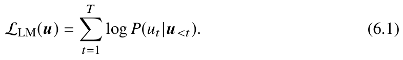
原书公式 6.1① 公式
② 符号
| 符号 | 含义 | 形状 / 量纲 |
|---|---|---|
| \(\mathbf{u}=\{u_1,\dots,u_T\}\) | 一条 token 序列 | 长度 \(T\)；\(u_t\in\{1,\dots,V\}\) |
| \(u_{<t}\) | 位置 \(t\) 之前的所有 token | 长度 \(t-1\) 的序列 |
| \(P(u_t\mid u_{<t})\) | 模型在给定前缀后分给真实 token 的概率 | 标量，\(0<P\le1\) |
| \(\mathcal{L}_{\mathrm{LM}}\) | 整条序列的对数似然 | 标量（nat），一般 \(-10^3\sim-10^5\)，越大越好 |
③ 推导
先回顾要用到的两个工具。全概率公式（边缘化）：若 \(\{B_i\}\) 是样本空间的一个划分，则 \(P(A)=\sum_iP(A\cap B_i)=\sum_iP(A\mid B_i)P(B_i)\)。链式法则：\(P(X,Y)=P(X)P(Y\mid X)\)，一般地 \(P(x_1,\dots,x_T)=P(x_1)\prod_{t=2}^{T}P(x_t\mid x_1,\dots,x_{t-1})\)。二者其实是同一条恒等式的两面——链式法则是"乘法形式的联合分布"，全概率公式是"求和边缘化"。
- 从两项开始展开。设序列只有两个 token：\(P(u_1,u_2)=P(u_2\mid u_1)P(u_1)\)。分母布局下把 \(u_1\) 当条件（视作已知）就得到条件概率。三个 token 再展开一次：\(P(u_1,u_2,u_3)=P(u_3\mid u_2,u_1)P(u_2\mid u_1)P(u_1)\)。
- 一般情形。归纳可得 \(P(\mathbf{u})=P(u_T\mid u_{<T})\cdots P(u_2\mid u_1)P(u_1)=\prod_{t=1}^{T}P(u_t\mid u_{<t})\)，其中 \(u_{<1}\) 视为"空条件"，概率恒为 1。
- 关键一步：模型只能表达"前缀条件"。解码器每层带因果掩码（causal mask），位置 \(t\) 的注意力看不到 \(t\) 之后的 token，因此网络输出的分布定义上就是 \(P_\theta(u_t\mid u_{<t})\)，而不可能是 \(P(u_t\mid \mathbf{u})\)。第 2 步的乘积里每一项恰好都是这种形式，所以联合分布被分解成一串"前缀条件分布"的乘积——这就是"自回归"的全部含义。
- 取对数，乘积变求和。用恒等式 \(\ln\prod_t a_t=\sum_t\ln a_t\)（由 \(\ln(ab)=\ln a+\ln b\) 反复应用）： \[\mathcal{L}_{\mathrm{LM}}(\mathbf{u})=\log P(\mathbf{u})=\log\prod_{t=1}^{T}P(u_t\mid u_{<t})=\sum_{t=1}^{T}\log P(u_t\mid u_{<t}).\] 这一步的意义不只是"好看"：原始目标里每个因子都 \(\le1\)，长序列的乘积会指数下溢到 0（FP64 只能撑 \(T\approx1500\)），取对数后变成可以累加的实数。
- 为什么最大化似然 = 最小化交叉熵。\(\ln\) 在 \((0,\infty)\) 上严格单调递增，所以 \(\arg\max_x\ln f(x)=\arg\max_x f(x)\)，两者的 argmax 集合完全相同： \[\operatorname*{arg\,max}_\theta \prod_t P_\theta(u_t\mid u_{<t})=\operatorname*{arg\,max}_\theta \sum_t\log P_\theta(u_t\mid u_{<t}).\] 再加上"训练时最小化损失"的约定，取负号：\(\mathcal{L}_{\mathrm{avg}}=-\frac1T\sum_t\log P_\theta(u_t\mid u_{<t})\)。这个负对数似然（negative log-likelihood, NLL）正好等于交叉熵 \(H(p,q)\)：把数据的经验分布 \(p\) 看作"真实分布"、\(q=P_\theta\) 看作模型分布，而 \(-\sum_v p(v)\ln q(v)=-\frac1T\sum_t\ln q(u_t)\)。所以"最大化似然""最小化交叉熵""最小化 KL 散度"（因为 \(H(p,q)=H(p)+\mathrm{KL}(p\|q)\)，\(H(p)\) 是常数）三者是同一件事。
- 困惑度 PPL 与损失的关系。设 \(p_t=P_\theta(u_t\mid u_{<t})\)，平均损失 \(\mathcal{L}_{\mathrm{avg}}=-\frac1T\sum_t\ln p_t\)。定义 几何平均 \(G=\bigl(\prod_{t=1}^{T}p_t\bigr)^{1/T}\)（每个预测概率都取几何平均，而不是算术平均）。由对数性质：\(\ln G=\frac1T\sum_t\ln p_t=-\mathcal{L}_{\mathrm{avg}}\)，故 \(G=\exp(-\mathcal{L}_{\mathrm{avg}})\)。困惑度就是这个几何平均的倒数： \[\mathrm{PPL}\equiv\frac1G=\exp\Big(\frac1T\sum_t\log\frac1{p_t}\Big)=\exp(\mathcal{L}_{\mathrm{avg}}).\] 直觉上的解释：\(\mathrm{PPL}\) 相当于"模型在每一步平均在多少个等可能的候选里犹豫"。若某序列上模型对每个 token 都给真实 token 概率 \(1/20\)，则 \(\mathcal{L}_{\mathrm{avg}}=\ln 20\)，PPL \(=20\)。
- 几何平均 \(\le\) 算术平均（顺带解释 PPL 的"下界感"）。由 Jensen 不等式（\(\ln\) 是凹函数，\(\ln\bar{x}\ge\frac1T\sum\ln x_t\)），\(G\le\frac1T\sum_t p_t\)。也就是说 PPL 不超过模型平均分配的候选数，模型自信时 PPL 会远小于词表大小 \(V\)。
- 梯度。目标是对 \(\theta\) 最大化 \(\mathcal{L}_{\mathrm{LM}}\)，所以下降方向要用它的负梯度。若定义要最小化的损失 \(\mathcal{L}_{\mathrm{avg}}\)，链式法则给出（\(\theta\) 出现在每个 \(t\) 的条件分布里，求和的每一项都要算梯度）： \[\nabla_\theta\mathcal{L}_{\mathrm{avg}}=-\sum_{t=1}^{T}\nabla_\theta\log P_\theta(u_t\mid u_{<t}).\] 注意 \(\nabla_\theta\sum_t(\cdot)=\sum_t\nabla_\theta(\cdot)\)，因为 \(\theta\) 是所有项共享的同一个参数向量。
- 把梯度落到 logits 上：\(\partial\mathcal{L}/\partial z=p-y\)。设某一步的 logits 为 \(z\in\mathbb{R}^V\)，标签为 one-hot 向量 \(y\in\mathbb{R}^V\)，\(p=\operatorname{softmax}(z)\)，即 \(p_i=\frac{e^{z_i}}{\sum_j e^{z_j}}\)。损失 \(-\sum_i y_i\ln p_i\)。先求 softmax 的 Jacobian： \[\frac{\partial p_j}{\partial z_i}=\frac{\partial}{\partial z_i}\frac{e^{z_j}}{\sum_ke^{z_k}}=\frac{e^{z_j}\delta_{ij}}{\sum_ke^{z_k}}-\frac{e^{z_j}}{\bigl(\sum_ke^{z_k}\bigr)^2}e^{z_i}=\frac{e^{z_j}\delta_{ij}}{S}-\frac{e^{z_i}e^{z_j}}{S^2}=p_j(\delta_{ij}-p_i).\]
- 与交叉熵相乘（链式法则）。分母布局下，\(\frac{\partial\mathcal{L}}{\partial z_k}=\sum_i\frac{\partial\mathcal{L}}{\partial p_i}\frac{\partial p_i}{\partial z_k}\)，而 \(\frac{\partial\mathcal{L}}{\partial p_i}=-\frac{y_i}{p_i}\)（\(y\) 是常数），代入上一步： \[\frac{\partial\mathcal{L}}{\partial z_k}=-\sum_i\frac{y_i}{p_i}\,p_i\,(\delta_{ik}-p_k)=-\sum_i y_i(\delta_{ik}-p_k)=-\sum_i y_i\delta_{ik}+p_k\sum_iy_i=p_k-y_k.\] （末步用了 \(\sum_i y_i=1\)、\(\sum_i y_i\delta_{ik}=y_k\)。）矩阵形式就是 \(\partial\mathcal{L}/\partial Z=\operatorname{softmax}(Z)-Y\)：梯度就是"预测概率减去 one-hot 标签"，正确类概率越大、梯度越小（预测越自信、惩罚越轻）。
(6.2)前缀语言模型的训练目标#
出处第 6 章 6.1.1 节 Language Modeling（前缀 LM 变体，对应 5.3.3 节的前缀解码器架构） 对照原文
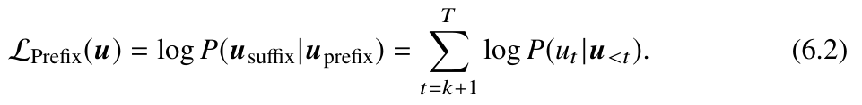
原书公式 6.2① 公式
序列被切成 \(\mathbf{u}_{\mathrm{prefix}}=\{u_1,\dots,u_k\}\)（prompt / 输入）与 \(\mathbf{u}_{\mathrm{suffix}}=\{u_{k+1},\dots,u_T\}\)（要预测的输出），\(k\) 是随机选出的切分位置。
② 符号
| 符号 | 含义 | 形状 / 量纲 |
|---|---|---|
| \(k\) | 前缀长度，随机采样得到，\(1\le k\le T\) | 标量 |
| \(\mathbf{u}_{\mathrm{prefix}}\) | 输入部分，不计入损失 | 长度 \(k\) |
| \(\mathbf{u}_{\mathrm{suffix}}\) | 待预测部分，逐 token 计损失 | 长度 \(T-k\) |
| \(\mathcal{L}_{\mathrm{Prefix}}\) | suffix 的对数条件似然 | 标量（nat），越大越好 |
③ 推导
- 第一步：把边缘化范围缩小到 suffix。在 6.1 第 2 步的链式法则分解里，前 \(k\) 项是 \(P(u_t\mid u_{<t})\)（\(t\le k\)）。现在前缀是已知输入而非待预测目标，于是对应的边缘化项被整体提出来，条件概率只对 suffix 展开： \[\log P(\mathbf{u}_{\mathrm{suffix}}\mid\mathbf{u}_{\mathrm{prefix}})=\log\prod_{t=k+1}^{T}P(u_t\mid \mathbf{u}_{\mathrm{prefix}},u_{k+1},\dots,u_{t-1}).\]
- 第二步：利用因果性把两个条件合并。前缀解码器（prefix decoder / Uni-Predictor）的注意力也是因果的：位置 \(t\) 看不到 \(t\) 之后的东西，因此 \(P(u_t\mid \mathbf{u}_{\mathrm{prefix}},u_{k+1..t-1})=P(u_t\mid u_{<t})\)——这正是 6.1 里那个条件分布。于是求和的上下限变成 \(t=k+1\) 到 \(T\)。这一步是严格相等而不是近似，因为两种写法描述的是同一个网络输出。
- 第三步：与标准 LM 的关系。两条目标只差前 \(k\) 项： \[\mathcal{L}_{\mathrm{Prefix}}(\mathbf{u})=\mathcal{L}_{\mathrm{LM}}(\mathbf{u})-\sum_{t=1}^{k}\log P(u_t\mid u_{<t}).\] 在代码里的实现方式是对前 \(k\) 个位置的标签置 \(-100\)（PyTorch `CrossEntropyLoss` 的 `ignore_index`），让它们的损失为 0。求和范围缩短还有一个附带好处：梯度更"干净"，模型不会把容量浪费在"猜用户给的 prompt"上。
- 第四步：为什么等价于 seq2seq 的输入–输出预测。联合分布也可以写成 \(P(\mathbf{u})=P(\mathbf{u}_{\mathrm{prefix}})P(\mathbf{u}_{\mathrm{suffix}}\mid\mathbf{u}_{\mathrm{prefix}})\)。前缀项与 \(\theta\) 无关（它只是给定的输入，不参与优化），所以最大化 \(\log P(\mathbf{u})\) 等价于最大化前缀 LM 目标。这就是"训练一个 decoder-only 模型也能做输入输出任务"的原因。
(6.3)填空语言模型（FIM）的训练目标#
出处第 6 章 6.1.1 节 Language Modeling（Fill-in-the-Middle 任务） 对照原文
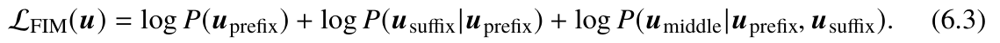
原书公式 6.3① 公式
② 符号
| 符号 | 含义 | 形状 / 量纲 |
|---|---|---|
| \(\mathbf{u}_{\mathrm{prefix}}\) | 前段 | 序列 |
| \(\mathbf{u}_{\mathrm{suffix}}\) | 后段（拼到 prefix 之后，作为"已知的右侧上下文"） | 序列 |
| \(\mathbf{u}_{\mathrm{middle}}\) | 被挖掉的中段，是唯一的预测目标 | 序列 |
| \(\oplus\) | 序列拼接：\(\mathbf{u}_{\mathrm{prefix}}\oplus\mathbf{u}_{\mathrm{suffix}}\) | 长度 \(|\mathrm{prefix}|+|\mathrm{suffix}|\) |
③ 推导
- 第一步：构造重排后的序列。FIM 的核心技巧是改输入的顺序，让因果掩码也能用上"右侧信息"。把原序列重排成 \(\mathbf{v}=\bigl(\mathbf{u}_{\mathrm{prefix}}\oplus\mathbf{u}_{\mathrm{suffix}}\oplus\mathbf{u}_{\mathrm{middle}}\bigr)\)，即"prefix 在前、suffix 紧跟其后、middle 放到最后"。
- 第二步：在 \(\mathbf{v}\) 上用 6.1 的链式法则。无条件对数似然按块分解： \[\log P(\mathbf{v})=\log P(\mathbf{u}_{\mathrm{prefix}})+\log P(\mathbf{u}_{\mathrm{suffix}}\mid\mathbf{u}_{\mathrm{prefix}})+\log P(\mathbf{u}_{\mathrm{middle}}\mid\mathbf{u}_{\mathrm{prefix}},\mathbf{u}_{\mathrm{suffix}}).\] 第一块是无条件概率；第二块的条件只有 prefix（因为 suffix 紧跟在 prefix 后面，它前面只有 prefix）；第三块的条件包含 prefix 和 suffix，正是我们要的"左右都能看"。
- 第三步：只保留第三块。前两块是无监督的"免费"信号（可以复用海量语料），middle 块才是需要预测的目标，于是 \[\mathcal{L}_{\mathrm{FIM}}(\mathbf{u})=\log P(\mathbf{u}_{\mathrm{middle}}\mid \mathbf{u}_{\mathrm{prefix}},\mathbf{u}_{\mathrm{suffix}}).\] 注意式中右边第三项之所以条件里有 suffix，靠的是"重排后 suffix 位于 middle 之前"这一构造，而不是模型能看未来。
- 第四步：训练时怎么用。实际采样时按比例选三种切法（prefix 切、中间切、后缀切），分别生成 PSM / SPM / MPS 三种任务序列（用特殊 token 标记），推理时按同样格式拼接 prompt，让模型续写 sentinel token 之间的内容。这样一个模型就能同时做"前缀生成""中间填充""后缀生成"。
(6.4)去噪自编码（DAE）的训练目标#
出处第 6 章 6.1.2 节 Denoising Autoencoding（6.1.3 节 Mixture-of-Denoisers 是它的混合版本） 对照原文
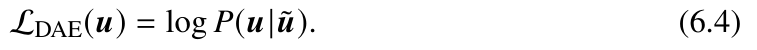
原书公式 6.4① 公式
\(\tilde{\mathbf{u}}\) 是对 \(\mathbf{u}\) 做随机替换 / 删除 / 掩码得到的"带噪文本"，\(\mathbf{u}\mid\tilde{\mathbf{u}}\) 表示"已知带噪版本、恢复原文"这一条件。
② 符号
| 符号 | 含义 | 形状 / 量纲 |
|---|---|---|
| \(\tilde{\mathbf{u}}\) | 加噪（corrupted）文本：随机遮蔽、删除或替换部分 token | 长度通常 \(\le T\)，与 \(\mathbf{u}\) 词表相同 |
| \(P(\mathbf{u}\mid\tilde{\mathbf{u}})\) | 去噪条件概率：给定带噪文本，原文是它的概率 | 标量，\(0<P\le1\) |
| \(\mathcal{L}_{\mathrm{DAE}}\) | 去噪对数似然 | 标量（nat），越大越好 |
③ 推导
- 第一步：写出联合分布并做边缘化。\(P(\mathbf{u},\tilde{\mathbf{u}})=P(\tilde{\mathbf{u}})P(\mathbf{u}\mid\tilde{\mathbf{u}})\)。这里 \(\tilde{\mathbf{u}}\) 是我们主动构造的（噪声过程已知且与 \(\mathbf{u}\) 无关），\(P(\tilde{\mathbf{u}})\) 这一项不含 \(\theta\)，最大化联合似然就退化为最大化 \(P(\mathbf{u}\mid\tilde{\mathbf{u}})\)。这就是 DAE 的"自监督"含义：不需要人工标签，标签就是原文自己。
- 第二步：按链式法则展开条件概率。 \[\log P(\mathbf{u}\mid\tilde{\mathbf{u}})=\sum_{t=1}^{T}\log P\bigl(u_t\mid\tilde{\mathbf{u}},u_{<t}\bigr).\] 与 6.1 相比有两处不同：条件里多了 \(\tilde{\mathbf{u}}\)，且在 encoder-only（BERT）架构下注意力没有因果掩码，所以条件里的 \(u_{<t}\) 可以换成 \(\mathbf{u}_{\setminus t}\)（除自己以外的全部原文）。
- 第三步：损失掩码（为什么式子里只有一项 \(\log\)）。BERT 的实现只对被选中的 15% 位置算交叉熵，其余位置标签置 \(-100\)。严格来说被优化的目标是 \(\log P(\mathbf{u}_{S}\mid\tilde{\mathbf{u}})\)，其中 \(S\) 是被扰动位置的集合；但如果每一步都独立重采样 \(S\)，对这些"随机子集似然"取期望，正好得到上式按位置求和的形式（省略求和的常数因子）。
- 第四步：与 6.1 的对比。6.1 是"单向预测未来"，损失 \(\log P(u_t|u_{<t})\)；6.4 是"双向重建"，损失 \(\log P(u_t|\tilde{\mathbf{u}},u_{\setminus t})\)。噪声比例 \(\rho\) 是关键超参：\(\rho\) 太小则任务太易、信号稀疏；\(\rho\) 太大则信息损失过多（T5 的 span corruption 用到约 50%）。原书 6.1.3 节的 MoD 就是把不同 \(\rho\) 与不同片段长度的去噪器混在一起训练（UL2、PaLM-2）。
(6.5)LLaMA 的参数量清点#
出处第 6 章 6.4.1 节 Parameter Calculation 对照原文
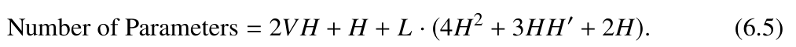
原书公式 6.5① 公式
② 符号
| 符号 | 含义 | 形状 / 量纲 |
|---|---|---|
| \(V\) | 词表大小 | 标量，LLaMA-7B 为 \(32000\) |
| \(H\) | 隐藏状态维度 | 标量，\(4096\) |
| \(H'\) | FFN 中间层维度 | 标量，\(11008\)（SwiGLU） |
| \(L\) | decoder 层数 | 标量，\(32\) |
| \(\Phi\) | 某个权重矩阵的元素个数（= 参数量） | 如 \(W_Q\in\mathbb{R}^{H\times H}\) 有 \(H^2\) 个 |
③ 推导
推理：矩阵乘的参数个数 = 行 × 列。逐模块清点再求和。
- 输入嵌入层：\(W_E\in\mathbb{R}^{V\times H}\)，共 \(VH\) 个参数。
- 输出层：\(W_L\in\mathbb{R}^{H\times V}\)（把隐藏状态映射回 \(V\) 维 logits），共 \(VH\) 个。输入嵌入与输出层合起来是 \(2VH\)——这是公式里第一项的来源。
- 最终归一化：最后的 RMSNorm 只需 \(H\) 个缩放参数（不含偏置），即公式里的孤立项 \(+H\)。
- 每层的注意力：\(W_Q,W_K,W_V,W_O\) 各为 \(H\times H\)，共 \(4H^2\) 个参数。
- 每层的前馈网络：SwiGLU 的 FFN 是 \(\mathrm{SwiGLU}(XW_{\mathrm{down}},\,XW_{\mathrm{gate}}\otimes(XW_{\mathrm{up}}))\)。其中 \(W_{\mathrm{down}}\in\mathbb{R}^{H'\times H}\)（\(H'H\) 个）、\(W_{\mathrm{gate}}\in\mathbb{R}^{H'\times H}\)（\(H'H\) 个）、\(W_{\mathrm{up}}\in\mathbb{R}^{H\times H'}\)（\(HH'\) 个），合计 \(3HH'\) 个。
- 每层的归一化：注意力前与 FFN 前各一个 RMSNorm，各 \(H\) 个参数，合计 \(2H\)。
- 把 4–6 相加再乘层数，加 1–3：\(4H^2+3HH'+2H\) 是每 decoder 层的参数量，乘 \(L\) 层，再加 \(2VH+H\)，即得公式 6.5。
- 代入 LLaMA-7B 验算：\(2VH=2\times32000\times4096=262{,}144{,}000\)；\(H=4096\)；每层 \(4\cdot4096^2=67{,}108{,}864\)，\(3\cdot4096\cdot11008=135{,}266{,}304\)，\(2H=8192\)，合计 \(202{,}383{,}360\)，乘 \(32\) 层得 \(6{,}476{,}267{,}520\)。总计约 \(6.74\times10^9\)，与原书 6.4.3 节给出的 \(P\approx6.74\times10^9\) 一致。
RMSNorm（无偏置）成立，用 LayerNorm 要额外 \(2L\) 个偏置参数，量级可忽略但计数上要清楚；(c) 公式给的是名义参数量，训练时每个参数还要配 Adam 的一阶矩、二阶矩各一份 FP32 状态，显存开销是参数的 12 倍（见 6.4.4 节）。(6.6)多头注意力层的训练计算量#
出处第 6 章 6.4.2 节 Estimation of Training Cost 对照原文
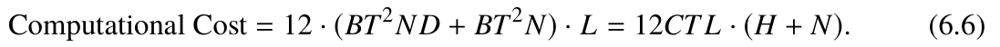
原书公式 6.6① 公式
② 符号
| 符号 | 含义 | 形状 / 量纲 |
|---|---|---|
| \(B\) | 批大小 | 标量 |
| \(T\) | 序列长度 | 标量 |
| \(N\) | 注意力头数 | 标量，\(D=H/N\) |
| \(D\) | 每头维度 | 标量 |
| \(C=BT\) | 一个 batch 的 token 总数 | 标量 |
| FLOPs | 浮点运算次数；约定"一次乘加（乘 + 加）算 2 次" | 标量 |
③ 推导
先用公式 5.5 的缩放点积注意力：\(\mathrm{Attn}(Q,K,V)=\mathrm{softmax}\bigl(\frac{QK^{\top}}{\sqrt{D}}\bigr)V\)。\(Q,K,V\in\mathbb{R}^{B\times T\times H}\) 拆头转置后为 \(\tilde Q,\tilde K,\tilde V\in\mathbb{R}^{B\times N\times T\times D}\)。
- 矩阵乘 \(\tilde Q\tilde K^{\top}\)：输出形状 \(B\times N\times T\times T\)，每个元素是长度 \(D\) 的点积，需 \(T\cdot D\) 次乘 + \(T\cdot(D-1)\) 次加 \(\approx2T^2D\) FLOPs，总计 \(2BT^2ND\)。
- 缩放（除以 \(\sqrt D\)）与 softmax：缩放需 \(BT^2N\) 次除法；softmax 分三步——逐元素取指数 \(BT^2N\) 次、按行求和 \(BT^2N\) 次加法、除以行和 \(BT^2N\) 次，合计 \(3BT^2N\)。缩放与 softmax 一起是 \(4BT^2N\)。
- 再乘 \(\tilde V\)：\(\bigl(BT^2N\bigr)\times\bigl(BNTD\bigr)\) 形状的元素，每个元素是长度 \(D\) 的点积，共 \(2BT^2ND\) FLOPs。
- 前向合计：\(4BT^2ND+4BT^2N=4BT^2N(D+1)\)。
- 反向 = 2 倍前向。这是训练计算的通用经验：一个标量损失对某个中间激活求梯度，需要沿前向图回溯一遍，计算量与前向同阶；对 \(Q,K,V\) 的输入梯度各需要一次矩阵乘的转置版本。工程上通常按"反向 ≈ 2× 前向"计（严格地说，softmax 等逐元素算子会多出常数因子，但主导项确实是那两个矩阵乘）。于是每层总计 \(12BT^2N(D+1)\)。
- 乘层数并化简：\(L\cdot12BT^2N(D+1)\)。把 \(D=H/N\) 代入：\(12L(BT^2N\cdot H/N + BT^2N)=12L(BT^2H+BT^2N)=12(BT)TL(H+N)=12CTL(H+N)\)。最后一个等号用了 \(C=BT\)。
- 读一下这个式子说了什么。在固定 \(C\)（token 预算）下，总计算量 \(\propto L(H+N)\)，所以训练成本主要看宽度 × 层数；而在固定 \(L(H+N)\) 下，训练成本严格线性于 \(C\)。这就是 Chinchilla 那条"给定算力，数据与参数应按比例增长"结论的算力侧来源。
(6.7)线性变换层的计算量 = 6C × 参数量#
出处第 6 章 6.4.2 节 Estimation of Training Cost 对照原文
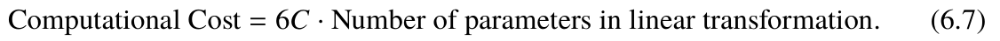
原书公式 6.7① 公式
更精确的写法（原书正文）：若线性变换部分的参数总量为 \(\Phi_{\mathrm{lin}}\)，则 \(\text{FLOPs}=6C\,\Phi_{\mathrm{lin}}\)。
② 符号
| 符号 | 含义 | 形状 / 量纲 |
|---|---|---|
| \(C=BT\) | 一个 batch 的 token 总数 | 标量 |
| \(\Phi_{\mathrm{lin}}\) | 所有线性层权重矩阵的元素总数 | 标量（参数个数） |
| \(X,W,Y\) | 输入、权重、输出 | \(X\in\mathbb{R}^{B\times T\times H}\)，\(W\in\mathbb{R}^{H\times H'}\)，\(Y\in\mathbb{R}^{B\times T\times H'}\) |
③ 推导
- 前向。把 \(X\) 看成 \(BT=C\) 个长度为 \(H\) 的行向量。\(Y=XW\) 需要 \(C\cdot H\cdot H'\) 次乘法 + 几乎同样多次加法，即 \(2CHH'\) FLOPs。
- 反向：算 \(dW\)。分母布局下 \(dW=X^{\top}dY\)，形状 \((H\times C)(C\times H')\)，代价同样是 \(2CHH'\) FLOPs。
- 反向：算 \(dX\)。\(dX=dY\,W^{\top}\)，形状 \((C\times H')(H'\times H)\)，代价 \(2CHH'\) FLOPs。
- 合计。\(2CHH'+2CHH'+2CHH'=6CHH'=6C\cdot(HH')\)。而 \(HH'\) 正是这个权重矩阵的参数个数 \(\Phi\)。推广到任意形状的线性层（\(Q/K/V/O\) 投影、FFN 的三个矩阵、输出层），只要是"输入 \(C\) 行、权重 \(\Phi\) 个元素"，就有 \(\text{FLOPs}=6C\Phi\)。
- 为什么这是整章最有用的估算式。把全模型的线性层加起来，\(\Phi_{\mathrm{lin}}\) 大致就是参数量 \(P\)（attention 的 \(QK^\top\) 不是线性层，故不计入）。于是 \(\text{FLOPs}\approx6CP\)，配合 6.6 的 \(12CTL(H+N)\) 就得到原书 6.4.3 节的 "总 FLOPs \(\approx6CP+12CTL(H+N)\)"。给定 \(P\)、\(C\) 就能直接估 GPU 小时数。
(6.8)开启激活重计算后的计算量 = 8C × 参数量#
出处第 6 章 6.4.2 节 Estimation of Training Cost（6.3.3 节 Activation Recomputation） 对照原文
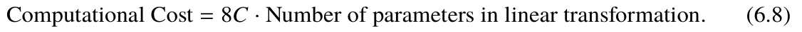
原书公式 6.8① 公式
② 符号
| 符号 | 含义 | 形状 / 量纲 |
|---|---|---|
| \(C=BT\) | 一个 batch 的 token 总数 | 标量 |
| \(\Phi_{\mathrm{lin}}\) | 线性层参数总数 | 标量 |
| \(P\) | 全模型参数量（近似取 \(\Phi_{\mathrm{lin}}\approx P\)） | 标量 |
③ 推导
- 先说激活重计算在做什么。反向传播需要每层的中间激活（前馈网络的输出、softmax 之前的注意力分数等）。默认做法是前向时全部存下来，显存占用巨大。激活重计算（activation checkpointing / gradient checkpointing）的做法是：只保存少数"检查点"层的激活，其余层的激活用完即弃；反向传播走到某一层时，用同样的输入重新做一次前向，把激活临时算出来再继续回传。
- 代价是多少？重算用的是前向计算，成本 \(2C\Phi_{\mathrm{lin}}\)，相对于 6.7 的 \(6C\Phi_{\mathrm{lin}}\) 是额外多一次前向： \[\text{FLOPs}=6C\Phi_{\mathrm{lin}}+2C\Phi_{\mathrm{lin}}=8C\Phi_{\mathrm{lin}}.\] 全模型约为 \(8CP\)（原书 6.4.3 节）。
- 换来的东西：计算量只涨 \(8/6\approx33\%\)，显存大幅下降。若每隔 \(s\) 层保存一个检查点，被保存的激活数约为原来的 \(1/s\)，而计算量是 \(2-1/s\) 倍前向。取 \(s\approx L\)（每层都不存）时计算量翻倍、显存降到极低；工程上常用 \(s\approx\sqrt L\) 或固定每若干层存一次来折中。
- 数学上的正确性（为什么重算不影响梯度）。前向传播是一个确定性纯函数：同样的输入必然给出同样的激活。因此"先算后扔、要用时再算"与"一直存着"得到的激活在数学上完全相同，梯度自然一致。这也是为什么必须用同一批输入重算（若输入里有 dropout 的随机数，就要把随机种子一起存下来，或者干脆把重算的那段改成无 dropout）。
补充：优化设置的数学细节（原书 6.2–6.3 节）
下面三节对应原书里只有图、没有编号公式的内容（Table 6.1、Figure 6.2、6.2.3 与 6.2.4 节正文）。它们是把公式 6.1 的损失真正训起来所必需的数学部分。
补充 A线性 warmup + 余弦退火的学习率#
出处第 6 章 6.2.2 节 Learning Rate 对照原文
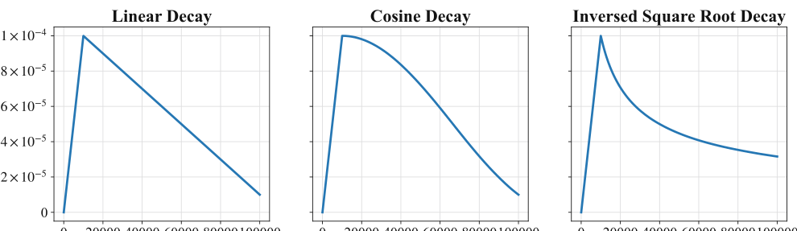
原书 Figure 6.2：三种学习率衰减曲线① 公式
② 符号
| 符号 | 含义 | 形状 / 量纲 |
|---|---|---|
| \(\eta_t\) | 第 \(t\) 步的学习率 | 标量，无量纲 |
| \(\eta_{\max}\) | 峰值学习率 | 标量，LLM 常用 \(10^{-5}\sim10^{-4}\)（GPT-3 \(6\times10^{-5}\)，LLaMA \(1.5\times10^{-4}\)） |
| \(\eta_{\min}\) | 最终学习率，约为峰值的 10% | 标量 |
| \(T_w\) | warmup 步数（原书：占总步数的 0.1%–0.5%） | 标量 |
| \(T\) | 总训练步数 | 标量 |
③ 推导
- warmup 为什么是线性插值？"从接近 0 线性涨到 \(\eta_{\max}\)"就是把点 \((0,\eta_0)\)、\((T_w,\eta_{\max})\) 用直线连接。直线方程 \(\eta_t=\eta_0+(\eta_{\max}-\eta_0)\frac{t-t_0}{T_w-t_0}\)，取 \(\eta_0\approx0,\ t_0=0\) 即得 \(\eta_t=\frac{t}{T_w}\eta_{\max}\)。斜率恒为 \(\eta_{\max}/T_w\)，且在 \(t=T_w^{-}\) 处一阶连续（左右导数都是 \(\eta_{\max}/T_w\)，若退火段起点导数不为 0 就会在学习率上留一个折角）。
- warmup 为什么必要？（核心原因）Adam 的更新量是 \(\eta_t\,\hat m_t/(\sqrt{\hat v_t}+\epsilon)\)。第 0 步时 \(v_0=0\)（零初始化），偏差修正后的 \(\hat v_t=\frac{v_t}{1-\beta_2^t}\) 是只基于 \(t\) 个样本的估计：用 Jensen 不等式，对 i.i.d. 的梯度 \(g_i=\nabla f(x_i)\)， \[\operatorname{Var}\Bigl[\tfrac1B\sum_i g_i\Bigr]=\frac1B\bigl(\mathbb{E}\|g\|^{2}-\|\mathbb{E}g\|^{2}\bigr)\le\frac1B\mathbb{E}\|g\|^{2}\approx\frac1B\sum_i\|\nabla f(x_i)\|^{2}.\] 方差随 \(B\to\infty\) 才收敛到 0。
- 接上一步：训练最初 \(t\) 很小，\(\hat v_t\) 剧烈波动，\(\sqrt{\hat v_t}\) 偶然很小会让 \(\hat m_t/\sqrt{\hat v_t}\) 爆掉；再加上参数是随机初始化的、\(v_t\) 里混入了 Hessian 的尺度信息尚不可靠，如果此时就用峰值学习率，等于"用最不稳定的步长 + 最大的步长"，极易在头几百步把训练打飞（loss 直接 NaN）。线性 warmup 用一个小学习率给二阶矩估计留出稳定的"热身期"。原书也直说了这一点：初期参数随机初始化、梯度偏大，故先用小学习率保证训练稳定。
- 余弦退火的构造。取 \(\eta_t=\eta_{\min}+\frac12(\eta_{\max}-\eta_{\min})(1+\cos(\pi t/T))\)。用恒等式 \(\cos\theta\) 在 \([0,\pi]\) 上单调递减，检查三个端点：\(t=T_w\to0\) 时 \(\cos 0=1\)，得 \(\eta_{\max}\)；\(t=T\to\pi\) 时 \(\cos\pi=-1\)，得 \(\eta_{\min}\)；\(t=T/2\) 时 \(\cos(\pi/2)=0\)，得中点值 \(\frac{\eta_{\max}+\eta_{\min}}{2}\)。所以它是一条从峰值平滑降到谷值的"半余弦波"。
- 余弦退火对收敛的作用（看导数）。\(\frac{d\eta}{dt}=-\frac{\pi(\eta_{\max}-\eta_{\min})}{2T}\sin\frac{\pi t}{T}\)。导数在两端（\(t=0,T\)）为 0、中点（\(t=T/2\)）取到最大值 \(-\frac{\pi(\eta_{\max}-\eta_{\min})}{2T}\)。这解释了 Figure 6.2 的曲线形状：起步平缓、中段陡、收尾平缓。
- 为什么这种形状有用？(a) 收尾时学习率趋近 0，参数在一个邻域内"沉淀"，等价于隐式的早停与平均化，末期 loss 的抖动被压住；(b) 起步平缓避免在已下降的 loss 上冲过头；(c) 中段保持较大的步长维持探索效率。相比线性衰减（导数恒定负），余弦在中段衰减更慢、更充分利用了中等学习率阶段。另一种常用方案是 \(t^{-1/2}\)（原书 Figure 6.2 右图，PaLM 与 T5 使用），它的导数同样趋 0，且与"训练越久、步长越保守"的直觉一致。
补充 BAdam / AdamW 的更新规则与权重衰减#
出处第 6 章 6.2.3 节 Optimizer 与 6.2.4 节 Stable Optimization Techniques（Table 6.1） 对照原文
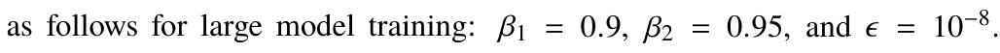
原书 6.2.3 节：Adam 的三个超参数① 公式
其中 \(g_t=\nabla_\theta\mathcal{L}_{\mathrm{avg}}(\theta;\mathbf{u}^{(1..t)})\)，\(\lambda\) 是权重衰减系数（原书与 Table 6.1 中取 0.1）。
② 符号
| 符号 | 含义 | 形状 / 量纲 |
|---|---|---|
| \(g_t\) | 第 \(t\) 步的随机梯度（batch 采样引入噪声） | 与 \(\theta\) 同形状的向量 |
| \(m_t,v_t\) | 一阶矩（动量）、二阶矩（逐元素平方的滑动平均） | 与 \(\theta\) 同形状；\(v\ge0\) |
| \(\beta_1,\beta_2\) | 衰减因子，\(0\le\beta_1,\beta_2<1\) | 无量纲；LLM 用 \(0.9, 0.95\) |
| \(\hat m_t,\hat v_t\) | 偏差修正后的一阶/二阶矩 | 同上 |
| \(\epsilon\) | 防止除零的小量 | \(10^{-8}\) |
| \(\lambda\) | 权重衰减系数 | 无量纲，\(0.1\) |
③ 推导
- \(m_t\) 就是梯度的指数加权平均。把递推式展开：\(m_t=(1-\beta_1)\bigl(g_t+\beta_1g_{t-1}+\beta_1^2g_{t-2}+\cdots+\beta_1^{t-1}g_1\bigr)\)。权重 \((1-\beta_1)\beta_1^{t-j}\) 构成几何级数，其和为 \(\frac{(1-\beta_1)\sum_{j=0}^{t-1}\beta_1^{j}}{1}=\frac{(1-\beta_1)(1-\beta_1^t)}{1-\beta_1}=1-\beta_1^t<1\)：总权重不足 1，因为 \(m_0=0\)（零初始化）把历史丢掉了。
- 偏差修正。假设各步梯度同分布、均值 \(\mathbb{E}[g_t]=\mu\)（非零），则 \(\mathbb{E}[m_t]=\mu\sum_j(1-\beta_1)\beta_1^{t-j}=\mu(1-\beta_1^t)\)。它随 \(t\to\infty\) 才趋于 \(\mu\)，但在前期被系统性低估了约 \(1-\beta_1^t\) 倍（\(\beta_1=0.9\) 时 \(t=10\) 仍有 \(35\%\) 的偏差）。除以 \(1-\beta_1^t\) 恰好把这个因子消掉：\(\mathbb{E}[\hat m_t]=\mu\)，且 \(\hat m_t=\frac{\sum_j\beta_1^{t-j}g_j}{\sum_j\beta_1^{t-j}}\) 是严格归一化的加权平均。
- 为什么需要二阶矩：用局部二次模型推最优步长。在当前点对损失做泰勒展开（二阶），\(f(\theta-\eta d)\approx f(\theta)-\eta\,g^{\top}d+\frac12\eta^{2}d^{\top}Hd\)，其中 \(g=\nabla f\)、\(H\) 是 Hessian。取移动方向 \(d=-g\) 并对步长 \(\eta\) 求极小（一阶条件）：\(-g^{\top}(-g)+\eta\,g^{\top}Hg=0\Rightarrow \eta^\star=\frac{\|g\|^{2}}{g^{\top}Hg}\)。用高斯近似 \(H\approx\sigma^{2}I\)（各方向曲率相同，方差 \(\sigma^{2}=\mathbb{E}\|g\|^2-\|\mathbb{E}g\|^2\)）代入：\(g^{\top}Hg\approx\sigma^{2}\|g\|^{2}\)，于是 \(\eta^\star\approx\frac{1}{\sigma^{2}}\propto\frac{1}{\sqrt{\mathbb{E}[g^2]}}\)。这就是"更新量除以二阶矩的平方根"的理由：梯度小的方向步长自动变大、梯度大的方向自动变小，等价于在每个坐标方向上做自适应的最坏情形步长（更精细的说法是 Diaconis–Ruppert 的可证明小量带 SGD）。
- 二阶矩为什么用"指数平均"而不是当前平方。若只用 \(g_t^2\)，噪声会让步长剧烈抖动。\(v_t\) 对平方做指数平滑，其噪声方差按 \(\frac{1-\beta_2}{1+\beta_2}\) 量级衰减（有效窗口 \(1/(1-\beta_2)=20\) 步）。\(\beta_2=0.95\) 比 \(\beta_1=0.9\) 大，意味着 \(v\) 的记忆窗口更长、更新更平滑；代价是它对曲率突变的响应更慢（例如训练后期 loss 曲面变平时，收敛略慢）。
- 权重衰减 1：从 L2 正则的梯度下降推出乘性缩放。考虑目标 \(\min_\theta\ \hat f(\theta)=\frac1B\sum_{i=1}^{B}f(x_i;\theta)+c\|\theta\|^{2}\)，其中 \(c\) 为正则系数。梯度 \(\nabla\hat f=\nabla\hat f_{\text{data}}+2c\theta\)。代入 vanilla 梯度下降 \(\theta_t=\theta_{t-1}-\eta\nabla\hat f(\theta_{t-1})\)： \[\theta_t=\theta_{t-1}-\eta\nabla\hat f_{\text{data}}(\theta_{t-1})-2c\eta\,\theta_{t-1}=\underbrace{(1-2c\eta)}_{\text{乘性缩放}}\,\theta_{t-1}-\eta\nabla\hat f_{\text{data}}(\theta_{t-1}).\] 所以 L2 正则等价于"每步把权重额外乘一个小于 1 的因子"——这就是为什么权重衰减能让权重保持小且不会像 L1 那样产生精确的 0。把系数记成 \(\lambda=2c\) 就是常见写法 \(\theta\leftarrow(1-\eta\lambda)\theta-\eta\nabla f\)。
- 权重衰减 2：为什么 Adam 里要"解耦"（AdamW）。如果把 L2 项直接加进梯度，Adam 会先对它做 \(\sqrt{v}\) 归一化：\(2c\theta\) 这一项的"梯度大小"会随 \(v_t\)（它由数据梯度主导）一起缩放，于是"每步乘 \((1-\eta\lambda)\)"这个恒定衰减不再成立——在梯度历史很大的区域，权重衰减会被显著削弱，等价于衰减率变成了数据相关的量。AdamW 把衰减从梯度里拿出来、直接作用在参数上：\(\theta_t=(1-\eta_t\lambda)\theta_{t-1}-\eta_t\hat m_t/(\sqrt{\hat v_t}+\epsilon)\)。这样 (a) 衰减强度只由超参 \(\lambda\) 决定，与数据无关；(b) 不需要把 \(\lambda\theta\) 加进参数梯度，梯度张量更小，省一次逐元素乘加。
- 数值细节。\(\epsilon\) 加在根号外面（分母），所以它保护的是 \(v\) 接近 0 的情形——理论上 \(\hat m_t/\sqrt{\hat v_t}\) 因为偏差修正已经良定义，但 FP32 下 \(\hat v_t\) 仍可能因下溢（梯度极小）变成 0，故留一个 \(10^{-8}\) 的地板。
补充 C梯度裁剪与混合精度的 loss scaling#
出处第 6 章 6.2.4 节 Stable Optimization Techniques 与 6.3.4 节 Mixed-Precision Training 对照原文
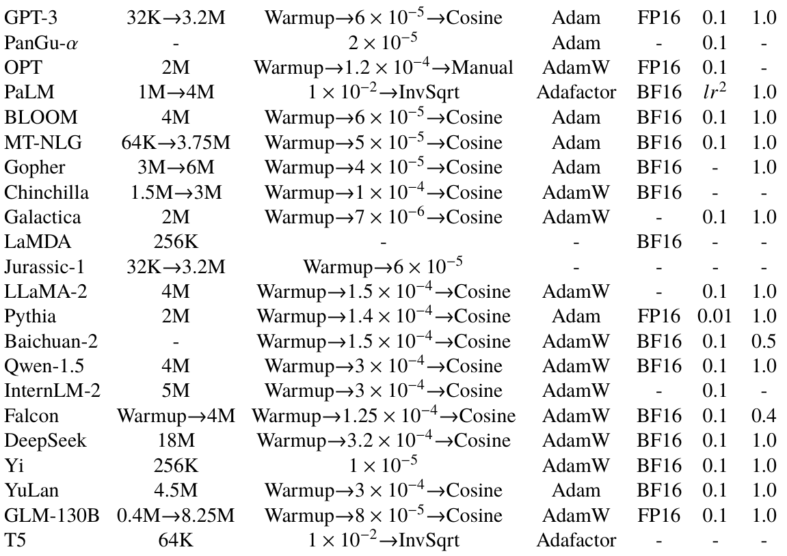
原书 Table 6.1：主流 LLM 的优化设置（GC 列即梯度裁剪阈值）① 公式
② 符号
| 符号 | 含义 | 形状 / 量纲 |
|---|---|---|
| \(g\) | 全模型拼接后的梯度向量 | \(\mathbb{R}^{|\theta|}\)，即把每个参数.grad 拉平 |
| \(\|g\|_2\) | 全局 2-范数（不是逐元素裁剪） | 标量，通常 \(\gg1\) |
| \(c\) | 裁剪阈值，Table 6.1 的 GC 列，取 \(1.0\)（Baichuan-2 用 \(0.5\)、Falcon 用 \(0.4\)） | 标量 |
| \(S=2^k\) | loss scaling 因子（\(2^{16}\) 是常见起点） | 标量 |
| \(\epsilon\) | FP16 的最小正规数 \(\approx6.1\times10^{-5}\)，最小次正规数 \(\approx6\times10^{-8}\) | 标量 |
③ 推导
- 梯度裁剪的推导：球面上的投影问题。我们要找一个与原梯度最同向但长度受限的向量。把目标写成带约束的极值问题（约束 \(\|g'\|_2\le c\) 是闭球，是凸集，所以这是凸优化问题，满足 KKT 条件即可解）：\(\max_{g'}\ g^{\top}g'\ \ \text{s.t.}\ \|g'\|_2\le c\)。拉格朗日函数 \(\mathcal{L}=g^{\top}g'+\mu(\|g'\|_2-c)\)，\(\mu\ge0\)。对 \(g'\) 求导置零：\(g+\mu\,\frac{g'}{\|g'\|_2}=0\Rightarrow g'=-\frac{\|g'\|_2}{\mu}g\)，即 \(g'\) 与 \(g\) 同向共线（负号被吸收到 \(\mu\) 的符号里）。取 \(\|g'\|_2=c\)（约束激活时取边界），得 \(g'=c\frac{g}{\|g\|_2}\)。所以
- 合成一个式子（分两种情况）。若 \(\|g\|_2\le c\)，不需要约束，\(g'=g\)；若 \(\|g\|_2>c\)，\(g'=\frac{c}{\|g\|_2}g\)。写成 \(\mathrm{clip}(g,c)=g\cdot\min(1,\frac{c}{\|g\|_2})\)。关键性质：裁剪只改变梯度的方向不变、只缩短长度，且它是 \(\|g\|\) 的单调非减函数（梯度范数大时步长自动被压住），因此不会改变"哪个方向更大"的相对关系。
- 为什么有效。把更新量限制为 \(\|\Delta\theta\|_2=\eta c\)：无论梯度多大，一步都不会走超过半径 \(\eta c\) 的距离。若损失曲面 \(L\)-Lipschitz（\(|f(x)-f(y)|\le L\|x-y\|\)，深度网络在局部近似成立），则一步造成的损失上升不超过 \(L\eta c\)——这就是"越过尖峰也不会跳出盆地"的定量表述。注意用全局范数而不是逐元素（
clip_by_normvsclip_by_value）：后者会把"少数维度梯度大"这一有用信号也抹平。 - 什么时候不该裁。若 \(\|g\|\) 长期远大于 \(c\)，裁剪就退化成"每步只走长度 \(\eta c\) 的球面梯度下降"，实际步长变得与梯度大小无关，可能拖慢收敛。所以阈值应设在"正常梯度范数"的量级，Table 6.1 里绝大多数模型都取 1.0。
- 为什么混合精度需要 loss scaling。FP16 有 1 位符号、5 位指数、10 位尾数，动态范围只有 \(-65504\sim65504\)，非正规数能到 \(\approx6\times10^{-8}\)。反向传播的梯度是逐层连乘的 Jacobian 矩阵之积，量级可能比激活小好几个数量级；一旦某个 \(g\) 的量级落到 \((6\times10^{-8},\,6\times10^{-5})\)，就下溢为 0，该参数从此不再更新（"死掉"），且这个错误是静默的。
- loss scaling 的做法与取值范围。把 loss 乘以 \(S=2^k\)：梯度是 loss 的线性函数（\(g\) 是 \(\partial(Sf)/\partial\theta=S\,\partial f/\partial\theta\)），于是所有梯度同乘 \(S\)，把它们从下溢区搬到 FP16 的正规数区间里，"下溢为 0"消失。做参数更新前再把梯度除以 \(S\) 还原（unscale），数学上完全等价： \[\theta\leftarrow\theta-\eta\frac{S\,g}{S}=\theta-\eta g.\] \(S\) 的上限由"不能溢出 FP16 最大值 65504"决定；通常取 \(S=2^{16}\) 并配合动态调整：一旦检测到梯度里有 Inf/NaN（溢出），跳过这一步更新并把 \(S\) 减半；若连续 \(n\) 步都正常，把 \(S\) 乘 2 慢慢升回去。
- 混合精度的数值误差来自哪里。FP16 只有 10 位尾数，相对精度约 \(2^{-11}\approx4.9\times10^{-4}\)。前向/反向每一步引入的舍入误差都是这个量级，误差会在层间部分累积，但不会像"梯度下溢"那样造成参数永久失效。因此实践是：权重、梯度、动量、优化器状态全部用 FP32 存，只有前向/反向的矩阵乘用 FP16/BF16（张量核心加速）。BF16 的指数位有 8 位（与 FP32 相同）、尾数只有 7 位，相对精度更差（约 \(2^{-8}\)），但动态范围约 \(10^{38}\)，所以BF16 通常不需要 loss scaling——这也是现在 LLM 训练主流选 BF16 的原因。
下一部分
本页覆盖 6.1–6.8（任务设计 + 参数量与算力估算）。公式 6.9 以后进入模型参数与效率分析的第二部分（训练时间估算、训练显存估算等），见 第 6 章 · 预训练（2/2）。若你想回头看损失是怎么被网络输出的 logits 具体实现的，可回到第 5 章的 softmax 与输出层。